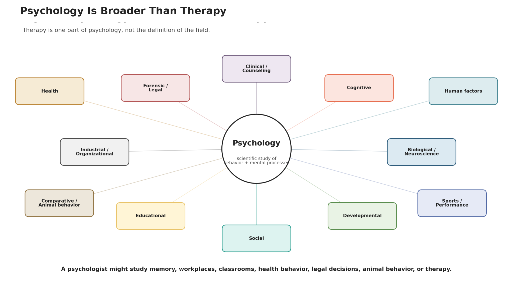
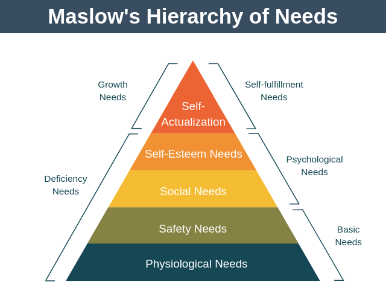

History and Approaches to Psychology
"Psychology is basically common sense dressed up in fancy language."
You have probably heard this. You may have thought it yourself when you signed up for this course. It is an understandable position — you have been observing human behavior your entire life, you have reasonably good intuitions about people, and when you read about psychological findings they often seem obvious. Of course people work harder when they feel their work matters. Of course we remember emotionally charged events better than boring ones. Of course first impressions stick. Everybody knows these things.
Here is the problem: experts are not much better at this than anyone else. Before Stanley Milgram ran his famous study on obedience to authority, he asked a panel of 39 psychiatrists to predict how many participants would go all the way to the maximum, most severe shock level. Their prediction: about one in a thousand (Milgram, 1963). The actual number was 26 of 40 — about two in three. We return to this study in Chapter 10. And when people see findings that contradict their intuitions, they often remember the finding as what they expected all along. This is called the hindsight bias — the feeling, after the fact, that you knew it all along. Every result looks obvious once you know it. That is not the same as knowing it.
The science of psychology exists precisely because common sense about human behavior is unreliable. We return to this throughout the course. For now: if the ideas in this chapter feel obvious, treat that feeling as data, not as proof.
Where This Fits
This chapter is the epistemological (that is, how scientists decide what is true) foundation for everything that follows. Before we can talk about how memory works, how conditioning shapes behavior, or why social influence is so powerful, we need to understand what kind of enterprise psychology is — what questions it asks, how it asks them, and why that matters. This chapter also tells the story of how those questions changed over time: from Victorian-era introspection labs to modern neuroscience and evolutionary biology. When you know where the field came from, the perspectives that dominate it today stop looking like arbitrary choices and start looking like what they are — the scar tissue from a century of productive arguments.
Learning Objectives
- Define psychology as the scientific study of behavior and mental processes, and describe the breadth of the field beyond common stereotypes.
- Identify the major historical schools of thought in psychology, the question each was trying to answer, and the limitation that forced the next school's emergence.
- Describe the modern theoretical perspectives in psychology and explain why no single perspective is sufficient.
- Apply the biopsychosocial model to explain a specific behavior or mental state.
- Explain what the evolutionary perspective adds to psychological explanation, and where that kind of explanation needs to be handled with caution.
- Identify at least three cases where psychological findings contradict common sense, and explain why intuition fails in those cases.
Section 1: What Is Psychology (And What Isn't It)?
The question usually comes at a dinner party or on an airplane. You tell someone what you study, and they get a look — somewhere between intrigue and mild suspicion — and say: "Oh, so you can tell what I'm thinking right now?"
The honest answer is no. The more useful answer is that if you could, it would not make you a psychologist — it would make you a mentalist, which is a job category that requires neither a research degree nor peer review. Psychology is the scientific study of behavior and mental processes. That definition is short but it carries weight.
"Behavior" means anything an organism does that is observable and measurable — talking, running, eating, avoiding, deciding, crying, sleeping. "Mental processes" means the internal events that drive behavior: perceiving, thinking, remembering, feeling, wanting. The discipline studies both because you cannot fully understand either without the other. A behavior without the mental process behind it is a reflex. A mental process without behavior is untestable. Psychology needs both.
Notice what that definition does not say. It does not say "treatment of mental illness." It does not say "analysis of dreams and childhood." It does not say "helping people feel better." Some psychologists do those things. Most do not. The field spans basic research (how does attention work?), applied science (how do we design cockpits so pilots do not miss critical warnings?), clinical and counseling work, educational practice, forensic consultation, sports performance, health behavior, human factors engineering, and organizational behavior. The stereotype of the therapist on the couch is one corner of an enormous territory.
A concrete example of the behavior/mental-process distinction: you flinch at a sudden loud sound before you consciously register what made it. The flinch is the behavior — observable, measurable, something a camera could record. The split-second appraisal that decided "that sound is worth reacting to" is the mental process — unobservable directly, but inferable from the behavior it produced. Psychology studies both ends of that chain, and a lot of the interesting work happens in figuring out how they connect.
"Scientific" is doing a lot of work in "scientific study of behavior and mental processes." What makes something a science is not the subject matter — history departments are not sciences, chemistry labs are. What makes something a science is the method: systematic observation, testable hypotheses, data collected through controlled procedures, conclusions revised when evidence demands it. Psychology adopted that method. That is the claim, and the rest of this chapter is the story of how it happened and what it cost.
Before reading on — in your own words, what is the difference between a "behavior" and a "mental process" in psychology? Give an example of each that is not from this chapter.
What did you think psychologists did before reading this? How close was your prior image to the actual scope of the field? Where did that image come from?

Section 2: A Short History, Organized by Problems
My own academic background is in animal behavioral ecology and developmental psychology — fields built on asking why a behavior exists, not just how it works. That habit of mind shows up throughout this course, especially once we reach the biological basis of behavior in Chapter 3. For now, here is the short version of a much older argument: a sequence of disagreements about what the right question for psychology even is. Each school below answered something the one before it could not, and ran into a limitation that forced the next move.

1832–1920

1842–1910

1878–1958

1856–1939

1904–1990
| School | Core question | Contribution | Limitation |
|---|---|---|---|
| Structuralism / early experimental psychology (Wundt, 1879; Titchener) | What is consciousness made of? | Brought measurement to the study of mind | Introspective reports were unreliable across observers |
| Functionalism (James, 1890) | What is the mind for? | Connected mind to adaptation and function | Less unified as a laboratory program than behaviorism; harder to reduce to a single method |
| Behaviorism (Watson, 1913; Skinner, 1957) | What can we actually observe? | Rigorous, replicable principles of learning and conditioning | Could not explain language or other generative cognition (Chomsky, 1959) |
| Psychoanalysis (Freud) | What is hidden from awareness? | Drew attention to unconscious motivation and early experience | Claims were structured so that no outcome could disconfirm them — weak falsifiability (Popper, 1959) |
| Humanistic psychology (Maslow, 1943; Rogers, 1951) | What makes human life meaningful? | Restored agency, growth, and subjective experience as legitimate objects of study | Weaker research base than behavioral or cognitive approaches |
| Cognitive (Miller, 1956, and others) | How does the mind process information? | Rebuilt attention, memory, and language as legitimate scientific objects | Risk of over-relying on the computer as a model — minds are not always computer-like |
| Biological / evolutionary (ongoing) | What are the physical mechanisms, and why do they exist? | Connected mind to brain, genetics, and natural selection | Risk of reductionism, or of generating untestable "just-so" stories about why a trait evolved (Gould & Lewontin, 1979) |
The behaviorism row is probably the one you have already watched in action: every time someone trains a dog to sit for a treat, or you notice your own stomach drop at a notification sound that has come to mean "bad news," you are watching conditioning at work — no claims about what the dog or you are "thinking" required. We cover the full mechanics in Chapter 6.
A couple of these rows deserve one more sentence.
Humanistic psychology earns its place in the table as a reaction against the two rows just above it. By the mid-twentieth century, Abraham Maslow and Carl Rogers argued that both behaviorism and psychoanalysis were missing something: human agency, growth, and the experience of being a person rather than a stimulus-response machine or a bundle of unconscious conflict. Its research base is thinner relative to the behavioral and cognitive traditions, but one finding has held up well: Rogers's claim that the quality of the therapeutic relationship itself — genuine positive regard, empathy, authenticity — is a meaningful driver of change in therapy, somewhat independent of specific technique. This is not just a historical claim about Rogers's own clinical impressions; a large modern meta-analysis spanning nearly 300 studies and over 30,000 patients confirms a reliable, if modest, relationship between the therapeutic alliance and treatment outcome across therapy types (Flückiger et al., 2018).

The transition from the behaviorism row to the cognitive row is worth a closer look, because the debate that caused it shows up again later in unexpected company. In 1957, Skinner argued in Verbal Behavior that language was an elaborate chain of conditioned responses. In 1959, the linguist Noam Chomsky reviewed the book and took the argument apart: children produce and understand sentences they have never heard before, too quickly and too creatively to be explained by reinforcement history alone. Something generative was happening, and behaviorism had no account of it.
Pick any two adjacent rows in the table. What did the second school explain that the first one could not?
In 1950, the mathematician Alan Turing proposed a test for machine intelligence: if a human interrogator could not distinguish a machine's text responses from a human's, the machine could be considered intelligent (Turing, 1950). That is behaviorism applied to machines — judge by outputs, not internal states. The Skinner-Chomsky debate maps directly onto it: Turing's test works if language is a behavior to imitate; it fails as a test of understanding if language requires the generative, meaning-based competence Chomsky was defending. Large language models complicate this debate rather than resolving it in either direction. They produce fluent language through statistical learning over massive text corpora — not through human-like childhood reinforcement histories, and not through explicitly Chomskyan grammar rules either. That makes them a useful test case for a deeper question: when does language-like behavior count as understanding? You will be better equipped to take a position on that by the end of Chapter 8.

The biological/evolutionary row is the one we return to most often in this course — carefully. Chapter 3 covers the mechanisms in depth. One framing you will hear constantly, in this course and outside it, is nature versus nurture: are we shaped more by genes or by environment? Treat that framing as a starting question, not an answer. Virtually every trait psychology studies turns out to be shaped by genes and environment interacting, not competing — Chapter 9 covers exactly how that interaction works. The working rule for the rest of this book: it is always fair to ask what a mechanism might be for, but any specific story about why it evolved needs to clear the same evidentiary bar as any other scientific claim.
Section 3: Modern Perspectives — Seven Lenses, No Single Truth
The historical schools are still alive, though they have changed shape. Today's psychology offers multiple theoretical perspectives — ways of framing questions and explaining findings — and most working psychologists draw on several rather than committing to one.
| Perspective | Main question |
|---|---|
| Biological | What physical mechanisms are involved? |
| Behavioral | What learning history shaped this behavior? |
| Cognitive | What thoughts, beliefs, memories, or interpretations matter? |
| Psychodynamic | What unconscious conflicts or early experiences may matter? |
| Humanistic | What goals, meanings, or growth needs are involved? |
| Sociocultural | What social norms, roles, institutions, or cultural expectations matter? |
| Evolutionary | What adaptive problem might this mechanism have helped solve? |
A few of these are worth one more sentence. The biological perspective gets a full chapter of its own — Chapter 3 is entirely about this level of analysis. Behavioral approaches have produced some of clinical psychology's clearest treatment tools, especially exposure-based treatments for anxiety and phobias. Other behavioral interventions, including applied behavior analysis, have a substantial evidence base but also require careful ethical discussion about goals, consent, and quality of life. The cognitive perspective is one of the most productive research perspectives in the field, though hardly the only candidate for that title. The sociocultural perspective gets its own extended treatment in Chapter 10.
The evolutionary perspective asks why a psychological mechanism exists — what problem it might have solved over evolutionary time, rather than just how it works in the moment. It is a useful question to ask in nearly every chapter of this book. It is also a perspective that needs to be handled with some care: claims about why a specific trait evolved are hard to test directly, since we cannot observe ancestral environments, and the broader scientific literature has a documented history of generating plausible-sounding evolutionary stories that turn out to be untestable (Gould & Lewontin, 1979). Use this lens to generate good questions about function. Hold any specific answer to the same evidentiary standard you would hold any other scientific claim.
No perspective is sufficient alone. Here is an everyday example: why did you check your phone three times in the last ten minutes? The behavioral perspective points to a reinforcement history — checking sometimes produces a rewarding notification, and unpredictable rewards are especially good at sustaining a behavior. The cognitive perspective points to the discomfort of an unresolved question ("did they respond?") competing for your attention until you resolve it. The sociocultural perspective points to a social environment that treats constant availability as normal. The evolutionary perspective asks why a brain would be built to find social information so hard to ignore in the first place — and points to the cost of missing socially relevant information for a species that depends on group cooperation to survive. None of these four answers contradicts the others. Each is answering a different question about the same five seconds of behavior.
A more serious example makes the same point. Consider depression. The biological perspective examines genetic risk, stress physiology, sleep, inflammation, and neurotransmitter systems associated with depression — an active research area where the older, simpler "chemical imbalance" story has not held up well under closer scrutiny and should not be treated as a settled, single cause. The psychodynamic perspective looks at loss, early attachment disruption, and internalized anger. The behavioral perspective notes the role of reinforcement withdrawal and social avoidance spirals. The cognitive perspective examines distorted thinking patterns — the cognitive triad of negative views about self, world, and future. The sociocultural perspective points to poverty, discrimination, and social isolation as risk amplifiers.
All of these are partially right. None is complete. This is what the biopsychosocial model formalizes: biological, psychological, and social/environmental factors interact to produce behavior and mental states. Explanation that ignores any of these domains will be incomplete.
Name one thing the biopsychosocial model can explain about depression that a purely biological account cannot. Name one thing a purely sociocultural account misses.
Choose a habit you have — something you do regularly without much thought. How would a behavioral psychologist explain it? How would a cognitive psychologist? How would a sociocultural psychologist? Do the accounts conflict, or does each add something the others miss?
Section 4: Why Science? (And Why It's Harder Than It Looks)
We are all amateur psychologists. We have to be — predicting what other people will do is a survival requirement. The question is not whether you have theories about human behavior. You do, and some of them are good. The question is whether your informal theories can be trusted, and how you would know if they were wrong.
The answer is: mostly you cannot, without systematic data. Here is why.
Hindsight bias is the tendency, after learning an outcome, to believe you knew it all along (Fischhoff, 1975). It is nearly universal and nearly impossible to suppress even when you are aware of it. You have felt this watching sports: a close game ends, and suddenly everyone in the room is certain they "knew" the winner the whole time — even people who were nervous about the outcome five minutes earlier. Studies of hindsight bias do the same thing under controlled conditions: ask participants to predict the outcome of a study, show them the results, then ask them to recall what they predicted. Recalled predictions shift reliably toward the outcome they just learned. The brain rapidly incorporates new information into its causal narrative and smoothes over prior uncertainty. This is efficient for learning; it is disastrous for evaluating evidence. It means that almost any finding in psychology will feel like common sense once you know it — which tells you nothing about whether you could have predicted it.
Related is confirmation bias: the tendency to seek out, interpret, and remember information that confirms existing beliefs, and to discount information that challenges them (Nickerson, 1998). Our informal theories of human behavior are protected from disconfirmation by the same cognitive machinery that builds them. The brain is not an objective theory-tester. It is a theory-preserver.
Science is a set of procedures designed to work around these biases: pre-registration of hypotheses before data collection, control conditions, blinded review, systematic replication, public data. None of these is magic. Science gets things wrong — sometimes spectacularly, sometimes for extended periods. Psychology has faced a genuine reckoning with this over the past decade: beginning around 2011, researchers began systematically attempting to replicate published findings and discovered that a substantial number did not hold up — the replication crisis (Open Science Collaboration, 2015).
The replication crisis is not a reason to dismiss psychology. It is a reason to be more careful about which findings you trust, and how confidently. The failures were real, and in some subfields substantial — but they were exposed by researchers using the tools of science itself: replication, transparency, statistical criticism, and open data. Bad findings get caught more often than bad intuitions do, not because psychologists are exceptionally honest, but because the field has built mechanisms that do not depend on anyone being exceptionally honest. Chapter 2 covers research methods in full. For now, the point is simple: common sense about human behavior is unreliable, systematic observation is better, and even systematic observation needs institutional checks to stay honest.
Think of a belief you hold about human nature — something you take for granted about why people do what they do. What would it take to convince you that you are wrong? If your answer is "I cannot imagine evidence that would change my mind," that is worth noticing.
Chapter Summary
Psychology is the scientific study of behavior and mental processes — a definition that is broader than most students expect. The field spans basic research, applied science, clinical practice, education, organizational work, and more; the stereotype of the therapist on a couch is one corner of a much larger territory.
The history of psychology is best understood as a series of arguments about what the right question is. Wundt brought measurement to the study of consciousness; James shifted the question from structure to function; Watson and Skinner evacuated the mind and studied only observable behavior; Freud argued that the most important mental events were unconscious; humanistic psychologists protested that behaviorism and psychoanalysis both misrepresented human experience; the cognitive revolution restored the interior of the mind as a legitimate scientific object; and the biological and evolutionary turns reconnected mind to brain, body, and natural history.
Modern psychology operates from multiple theoretical perspectives, not a single framework. The biological, psychodynamic, behavioral, humanistic, cognitive, sociocultural, and evolutionary perspectives each illuminate different aspects of behavior and mental life. The biopsychosocial model is the working synthesis: biological factors, psychological processes, and social/environmental context interact to produce behavior and mental states. Explanation that ignores any of these domains will be incomplete.
Psychology exists as a science because common sense about human behavior is unreliable. Hindsight bias makes every finding look obvious after the fact. Confirmation bias protects informal theories from disconfirmation. Systematic observation, controlled methods, and institutional accountability through replication and peer review are not perfect — the replication crisis is real — but they are better than intuition. And crucially, the problems in the field were identified through the scientific process itself.
Connections
| Concept from this chapter | Reappears in | Why it matters there |
|---|---|---|
| Behaviorism / operant conditioning | Ch. 6 — Learning | Ch. 6 covers the full mechanics of classical and operant conditioning; the brief historical framing here becomes a complete working theory |
| Cognitive revolution | Ch. 7/8 — Memory and Cognition | The information-processing framework introduced here is the foundation for all content on attention, memory, and reasoning |
| Evolutionary / behavioral-ecology framing | Ch. 3 — Neuroscience & Biological Bases (and woven throughout: Ch. 6, 9, 10, 12) | Chapter 3 develops the mechanisms in depth; every later chapter that asks "why does this mechanism exist?" is applying this lens with the same caution introduced here |
| Nature vs. nurture | Ch. 9 — Lifespan Development | Epigenetics and gene-environment interaction reframe the nature-nurture debate as a false dichotomy — it is never one or the other |
| Unconscious processes / psychoanalysis | Ch. 5 — States of Consciousness | Modern cognitive neuroscience has given the unconscious a rigorous empirical treatment that goes well beyond Freud — but his core insight survives |
| Biopsychosocial model | Ch. 14 — Psychological Disorders & Therapy | The biopsychosocial model is the dominant framework for understanding, diagnosing, and treating psychological disorders |
| Hindsight bias / confirmation bias | Ch. 2 — Research Methods & Statistics | These biases are the motivating problem for the scientific method — Ch. 2 covers the solutions in detail |
| Milgram's psychiatrist-prediction failure | Ch. 10 — Social Psychology | The misconception opener's example is the same study Ch. 10 covers in full — obedience to authority and why expert intuition badly underestimated it |
Review Questions
1. Psychology is best defined as:
Show answer & rationale
Answer: b. Why the others are tempting: (a) is the most common misconception — most people picture psychology as exclusively clinical, when most psychologists do not treat mental illness at all; (c) describes a medical specialty, not psychology; (d) describes philosophy of mind, a related but separate discipline. Psychology touches all of these domains but is not defined by any one of them.
2. Watson's 1913 behaviorist manifesto argued that psychology should:
Show answer & rationale
Answer: b. Why (a) is tempting: introspection was the dominant method Watson was explicitly rejecting — knowing this distinction is the point. (d) describes the evolutionary perspective, which comes much later in the field's history and asks a different kind of question.
3. The primary methodological problem with Wundt's structuralism was:
Show answer & rationale
Answer: c. Why (d) is tempting: Freud criticized psychology for ignoring the unconscious, but that is a different critique from a different tradition. Structuralism's specific problem was measurement reliability.
4. A dog learns to sit reliably whenever it hears the word "sit" because sitting is consistently followed by a treat. Which school of thought provides the most complete explanation of this learning, without needing to make any claim about what the dog is thinking?
Show answer & rationale
Answer: c. Why (b) is tempting: psychoanalysis does focus on internal states, but unconscious motivation is not what is driving a conditioned response. Behaviorism's entire methodological point is that this kind of learning can be fully explained by observable stimulus-response-consequence relationships, with no claims about inner experience required.
5. Functionalism, as developed by William James, differed from structuralism in that functionalism:
Show answer & rationale
Answer: b. Why (d) is tempting: limiting scope to observable behavior is behaviorism, which came later. Functionalism still engaged with conscious experience — it just asked a different question about it.
6. The cognitive revolution was triggered in part by behaviorism's inability to explain:
Show answer & rationale
Answer: c. Why (b) is tempting: the neural basis of conditioning is a legitimate scientific question, but it was not what drove the cognitive revolution. Chomsky's 1959 critique of Skinner was specifically about language — you cannot explain the ability to produce and understand novel sentences from reinforcement history alone.
7. The biopsychosocial model holds that:
Show answer & rationale
Answer: c. Why (a) is tempting: many students expect psychology to reduce to biology or neuroscience. The model specifically resists this — it treats all three levels as necessary.
8. Hindsight bias is relevant to the scientific method because:
Show answer & rationale
Answer: b. Why (a) is tempting: confirmation bias is the closer relative for research design. Hindsight bias specifically distorts retrospective judgment of what we "knew" before learning an outcome.
9. Freud's psychoanalysis was influential but scientifically problematic primarily because:
Show answer & rationale
Answer: c. Why (d) is tempting: Freud did not use laboratory methods at all — he used the consulting room. The problem was not replication failure; it was that the framework was not structured to permit disconfirmation in the first place.
10. A researcher studying how cultural norms shape what counts as "normal" grieving behavior is working primarily from which perspective?
Show answer & rationale
Answer: d. Why (b) is tempting: behavioral researchers study behavior, and grief involves behavior. But the sociocultural perspective specifically examines how norms, cultural frameworks, and social context define and shape psychological experience — which is what "what counts as normal" is asking.
11. The evolutionary perspective in psychology asks primarily:
Show answer & rationale
Answer: b. Why (d) is tempting: comparative research across species often informs evolutionary explanations, so the two get blurred. But the evolutionary perspective's defining question is why a mechanism exists — its adaptive function — not just what differences are present across species.
12. The replication crisis in psychology is best interpreted as:
Show answer & rationale
Answer: b. Why (a) is tempting: that is the popular interpretation. But failed replications were discovered by researchers systematically attempting to replicate published work — which is the scientific process working correctly. The problems are real; the interpretation that they disqualify psychology misses that science is defined precisely by its capacity for self-correction.
13. According to the humanistic perspective, the most important factor in successful therapy is often:
Show answer & rationale
Answer: c. Why (d) is tempting: this sounds like the scientifically responsible answer, but the question asks what humanistic psychology itself emphasizes, not what would make the strongest research design. Rogers's specific and lasting claim is that the relationship functions as the mechanism of change, somewhat independent of technique.
Key Terms
- Behaviorism
- The theoretical school, associated with Watson and Skinner, that argued psychology should study only observable behavior and abandon reference to unobservable mental states.
- Biopsychosocial model
- The framework holding that behavior and mental processes result from the interaction of biological, psychological, and social/environmental factors; no single level of analysis is sufficient.
- Cognitive psychology
- The study of internal mental processes including attention, memory, language, reasoning, and problem-solving; restored the mind as a legitimate object of scientific inquiry after behaviorism.
- Confirmation bias
- The tendency to seek, interpret, and remember information in ways that confirm preexisting beliefs, and to discount contradicting evidence.
- Evolutionary perspective
- A theoretical lens that asks why a psychological mechanism exists — what adaptive problem it may have solved over evolutionary time — rather than only how it operates. Useful for generating questions; specific claims about why a trait evolved require the same evidentiary standard as any other scientific claim and are harder to test directly than claims about present-day mechanism.
- Falsifiability
- The property of a scientific claim that makes it testable — that is, capable of being shown wrong by some possible observation. Claims that cannot be falsified are outside the scope of science.
- Functionalism
- The early school associated with William James that asked what the mind does and why, rather than what it is made of; strongly influenced by Darwinian theory.
- Hindsight bias
- The tendency, after learning an outcome, to believe one had predicted or known it all along; makes psychological findings seem "obvious" when they are not.
- Humanistic psychology
- The mid-twentieth-century movement, associated with Maslow and Rogers, that emphasized human agency, subjective experience, and growth potential as essential objects of psychological study.
- Introspection
- Wundt's method of having trained observers examine and report the contents of their own conscious experience; abandoned as a primary research method due to unreliability across observers.
- Psychoanalysis
- The theoretical and clinical system developed by Freud, emphasizing unconscious processes, early experience, and intrapsychic conflict as determinants of behavior; scientifically limited by lack of falsifiability.
- Replication crisis
- The finding, emerging from systematic replication efforts beginning around 2011, that a substantial proportion of published psychological findings could not be reproduced; prompted reforms in methodology and publication practice.
- Structuralism
- The program, most directly associated with Edward Titchener (a student of Wundt), to identify the basic elements of conscious experience through trained introspection. Grew out of Wundt's founding of experimental psychology but diverged from Wundt's own framework, which historians usually call voluntarism.
Further Reading
American Psychological Association — What is psychology?
https://www.apa.org/education-career/guide/subfields/what-is-psychology
Brief, authoritative overview of the field's scope and the range of careers psychologists pursue.
Noba Project — History of Psychology (Baker & Sperry)
https://nobaproject.com/modules/history-of-psychology
Peer-reviewed, open-access chapter; more depth on each major school than this chapter provides, with primary source references.
Watson, J. B. (1913). Psychology as the Behaviorist Views It.
Psychological Review, 20, 158–177.
The manifesto itself — short, readable, and genuinely worth reading. You can see the argument Watson was making and why it was persuasive, even where it goes too far.
Open Science Collaboration. (2015). Estimating the reproducibility of psychological science.
Science, 349(6251), aac4716.
The paper that launched the modern conversation about replication in psychology. The abstract and introduction are accessible without a statistics background.
References
Full citations for factual claims made in this chapter, for instructors or students who want to verify or go deeper. Distinct from Further Reading above, which is curated for student exploration rather than completeness.
Chomsky, N. (1959). Review of Verbal Behavior, by B. F. Skinner. Language, 35(1), 26–58.
Fischhoff, B. (1975). Hindsight ≠ foresight: The effect of outcome knowledge on judgment under uncertainty. Journal of Experimental Psychology: Human Perception and Performance, 1(3), 288–299.
Flückiger, C., Del Re, A. C., Wampold, B. E., & Horvath, A. O. (2018). The alliance in adult psychotherapy: A meta-analytic synthesis. Psychotherapy, 55(4), 316–340.
Gould, S. J., & Lewontin, R. C. (1979). The spandrels of San Marco and the Panglossian paradigm: A critique of the adaptationist programme. Proceedings of the Royal Society B, 205(1161), 581–598.
James, W. (1890). The principles of psychology. Henry Holt.
Maslow, A. H. (1943). A theory of human motivation. Psychological Review, 50(4), 370–396.
Milgram, S. (1963). Behavioral study of obedience. Journal of Abnormal and Social Psychology, 67(4), 371–378.
Miller, G. A. (1956). The magical number seven, plus or minus two: Some limits on our capacity for processing information. Psychological Review, 63(2), 81–97.
Nickerson, R. S. (1998). Confirmation bias: A ubiquitous phenomenon in many guises. Review of General Psychology, 2(2), 175–220.
Open Science Collaboration. (2015). Estimating the reproducibility of psychological science. Science, 349(6251), aac4716.
Popper, K. (1959). The logic of scientific discovery. Basic Books.
Rogers, C. R. (1951). Client-centered therapy: Its current practice, implications, and theory. Houghton Mifflin.
Skinner, B. F. (1957). Verbal behavior. Appleton-Century-Crofts.
Turing, A. M. (1950). Computing machinery and intelligence. Mind, 59(236), 433–460.
Watson, J. B. (1913). Psychology as the behaviorist views it. Psychological Review, 20, 158–177.
Note on verification: these citations were checked against secondary sources during drafting, but not every primary source has been independently re-read against the page numbers above. Spot-check before publication, especially the Fischhoff and Turing page ranges, where different secondary sources show minor discrepancies.